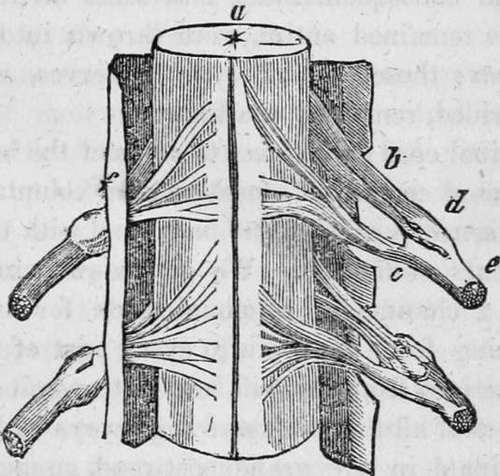

Chapter XI. The Spinal Marrow And Its Functions
Description
This section is from the book "Human Physiology For The Use Of Elementary Schools", by Charles Alfred Lee. Also available from Amazon: Human Physiology, for the Use of Elementary Schools.
Chapter XI. The Spinal Marrow And Its Functions
1. We have seen, that of all animals, the brain of man has the greatest development, in proportion to the spinal marrow and nerves ; if we descend to the lower animals, such as reptiles and fishes, we shall find that the brain presents merely a delicate, anterior termination of the spinal cord, not much larger in diameter than the cord itself. In these animals, we find the instincts very limited, and the displays of sagacity extremely obscure ; while they possess great tenacity of life. Frogs, for example, continue to jump about for many hours after their heart has been torn out; and the heart of the shark will palpitate as long after it has been removed from the body. Turtles have been known to live for months after the whole brain has been scooped out. These facts prove, that such an imperfect development of the cerebral mass, leaves the different systems of organs less intimately connected and more independent of each other.
2. If we descend still lower in the scale of invertebrate animals, we shall find the different parts still more independent of each other ; for if we divide their bodies, so that each part will possess a nervous ganglion, it will become a separate individual, and exercise all the functions performed by the entire animal ; and if we descend to zoophytes, we find that in cutting them into threads, however minute, each piece will retain life and continue to grow.
3. Medulla Oblongata
There is no distinct line of demarcation between the medulla oblongata and the spinal cord. For this reason, they are considered and described as one organ. The medulla oblongata, however, consisting of six columns, gives rise to several nerves of distinct function, and is supposed to be the point at which excitement to motion commences and sensation terminates, and to possess the power of originating motion in itself. Mr. Mayo infers this, from the fact that the brain proper, the optic tubercles, and even the cerebellum may be removed by successive portions, and still the animal live, and exhibit feeling and instinct ; but if the medulla oblongata be removed, all consciousness is immediately destroyed. Other physiologists say, that it is the hemispheres of the cerebrum that take cognizance of sensation, and the source from whence volition proceeds ; and that though they may be removed, layer after layer, without pain, yet by so doing, the senses are destroyed, memory and intelligence abolished, and the animal reduced to an automaton, destitute of design, apprehension, and judgment. As all the nerves which supply the larynx, lungs, heart, stomach, and external muscles of respiration originate from it, its removal must instantly destroy life.
4. The spinal cord passess down through the foramen magnum, or great hole of the skull, and the canal of the vertebra, till it reaches the second vertebra of the loins, where it generally terminates in a tapering point. Besides the bony case in which it is lodged, the cord is enclosed by a prolongation of the dura mater, which, however, does not adhere immediately to the bone, as it does in the skull. It also is supplied with extensions of the arachnoid and pia mater ; between which, there is usually a quantity of serous fluid, varying from two to six ounces, which seems to impart a certain degree of support by its pressure and obviates the effects of concussion.
5. The general form of the spinal cord is cylindrical, though somewhat flattened, from its transverse diameter being the greatest. Its thickness, however, is not uniform, as it bulges out at the lower part of the neck, where the nerves go off to the arms, and also at the lower part of the back, from whence spring the nerves of the legs. It is composed of grey and white, or cineritious and medullary matter, like the brain ; the situation of the two is, however, reversed ; the medullary matter being disposed in a thin layer upon the surface, while the grey portions occupies the centre. We, however, find the same arrangement in the medulla oblongata, and the central parts of the cerebrum and cerebellum. The chord, as I have already mentioned, is divided into two lateral halves by a groove in front and a similar groove behind. Besides this, there are on each side two lateral grooves faintly marked, from which the anterior and posterior nerves have their origin, so that in fact, the cord consists of four columns ; from the two anterior of which, the nerves of motion spring, and from the two posterior those of sensation.
a, Spinal marrow.
b, Fibres of sensation.
c, Fibres of motion. e, Nerve.
6. There are thirty pairs of nerves that spring from the spinal marrow, viz., eight from the region of the neck, twelve from that of the back, and five from the pelvis. By examining the above cut, it will be seen that they arise by two roots, one from the anterior, and one from the posterior column. The fibres of the posterior swell out into a ganglion before they unite with the anterior.
7. A few years ago, Sir Charles Bell discovered, that by opening the spinal canal in a living animal, and dividing the posterior roots of the nerves, the parts to which they are distributed are deprived of feeling. The limb may be pricked or lacerated in any way, without the animal manifesting the least feeling, or indication of suffering, while at the same time the power of motion remains. He also found that when the posterior roots were divided, sensation was destroyed, but motion remained. One of Majendie's experiments, is interesting. Availing himself of the fact, that the introduction of nux vomica into the system, produces violent spasms, tremors, and rigidity of the muscles : he administered it to an animal, after having severed the anterior roots of the spinal nerves. The consequence was, that while all the museles, whose nerves remained entire, were thrown into a state of violent spasm ; those supplied with the nerves, whose roots had been divided, remained unaffected.
Continue to:
- prev: Intellectual And Moral Faculties. Part 3
- Table of Contents
- next: The Spinal Marrow And Its Functions. Continued
Tags
humans, anatomy, skeleton, bones, physiology, organs, nerves, brain